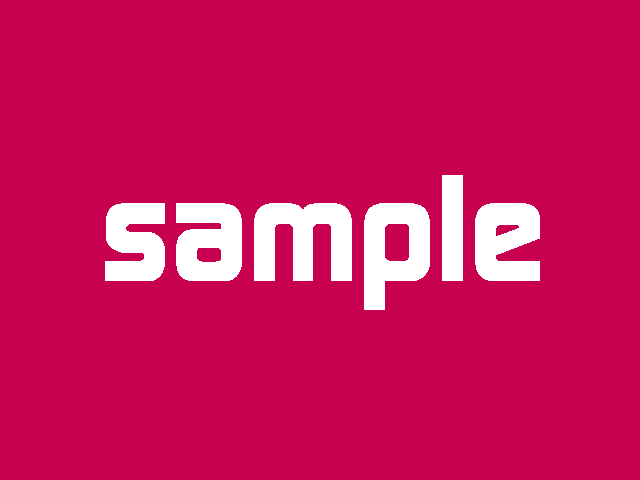

学科案内
電気情報工学科の全てをここでご紹介します
―電気情報工学科とは？
電気情報工学科は、電気をエネルギーや通信信号として利用する電気電子工学の分野と、コンピュータや情報・通信に関係した情報工学の分野の2つが合わさった学科です。
創設当初（昭和３８年）は、電気工学科として電気材料・電気エネルギー・パワーエレクトロニクス関係を中心に、 電子工学・光工学・電子デバイスなどの分野が加わり、さらにニューラルネットワーク・画像処理などの情報工学分野を拡大していたため 平成１２年の改組によって、電気情報工学科に生まれ変わりました。現在では、高学年ではコース制が導入され、Windows・Macマシンが1人1台利用できるような 環境が用意されており、より個人の興味に応じた教育を行っています。
―低学年では幅広い基礎をじっくりと学び、高学年では2コースに分かれ、より専門的に。
電気情報工学科では、3年次までは電気・電子工学と、情報工学について広く浅く学んでいき、基礎を身に付けます。 その後4年からは、電気電子工学コースと情報工学コースに分かれ、それぞれ独立したカリキュラムで、より専門的な教養を身に付けます。 また授業内で、コンテストや発表の機会を設け、プレゼンテーション能力と評価・改善提案能力を育成します。 さらに、創成型のテーマを実験等に取り入れることにより、創造性あふれる実践的技術者を育成します。
※教育目標やカリキュラムの詳細などは、「岐阜高専 学校要覧」の電気情報工学科のページをご覧ください。
詳細―各実験・研究で使用する６つの実験室
電気情報工学科は、2号館と呼ばれる場所に位置し、その中に各研究室や、実験室等が集約されています。その中からよく利用する実験室をご紹介します。
電気電子工学実験室
電気電子工学実験室は、電気電子分野の実験をする際に用いられます。実験は2年から始まりますが、4年までこの部屋を用いて実験することが多いです。
情報処理演習室
情報処理演習室は、Mac miniが何台も並ぶコンピュータルームです。主にプログラミングなどの授業で、プログラム言語の学習やUNIXの使い方などを習得します。また、昨年より回路シミュレータアプリ「iCircuit」を導入し、電気電子分野の授業でも利用されています。
情報工学実験室
情報工学実験室は、Windowsのノートパソコンが並ぶもう一つのコンピュータルームです。ここでは実験や授業など幅広い場面で利用されています。
その他の実験室
電気情報工学科には、その他にも様々な施設や設備があります。また、各研究室所属の学生が利用する専用の部屋が設けられており、そこではさらに深い分野の研究を行うことが出来ます。
Department of Electrical and Computer Engineering